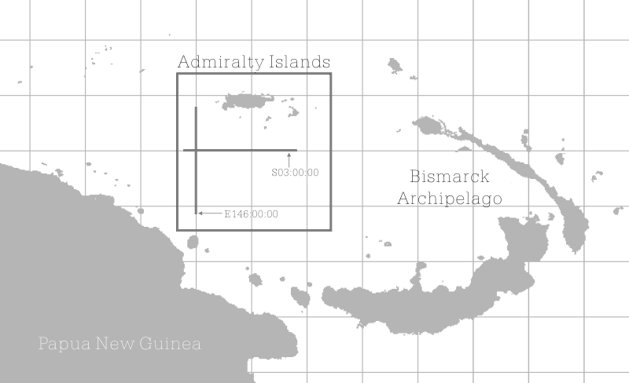
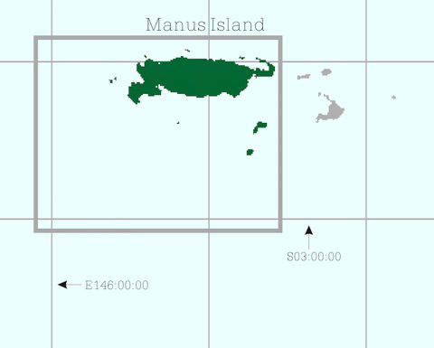
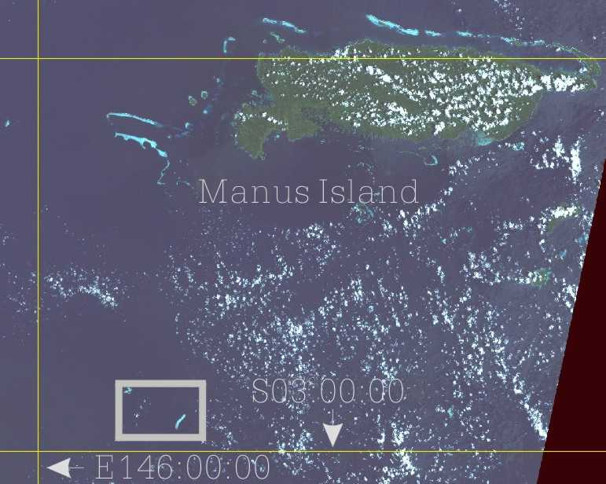
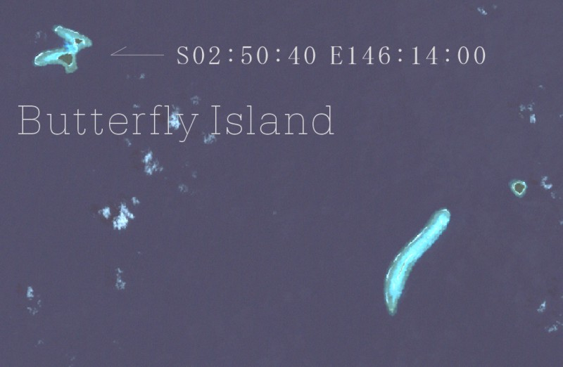

Butterfly Island 詳細地図
Butterfly Island 詳細地図
広域地図
この地図の中にバタフライアイランドが位置しています。
しかし，リーフも含めて１辺 2km の矩形に収まってしまうような
小さな島です。もっと拡大しないと見えてきません。
地図の中の矩形をクリックすると，拡大画像にジャンプします。

この地図の中にバタフライアイランドが位置しています。 しかし，リーフも含めて１辺 2km の矩形に収まってしまうような 小さな島です。もっと拡大しないと見えてきません。 地図の中の矩形をクリックすると，拡大画像にジャンプします。
周辺拡大地図
広域地図の矩形内を拡大した地図です。
まだ見えてきません。
バタフライアイランドはパプアニューギニアのマヌス州の中にあります。
マヌス州はアドミラルティ諸島の島々で形成されています。
その中で一番大きな島が州の名前にもなっているマヌス島です。
バタフライアイランドはマヌス島から南南西に下ったところに位置しています。
広域地図の矩形内を拡大した地図です。 まだ見えてきません。 バタフライアイランドはパプアニューギニアのマヌス州の中にあります。 マヌス州はアドミラルティ諸島の島々で形成されています。 その中で一番大きな島が州の名前にもなっているマヌス島です。 バタフライアイランドはマヌス島から南南西に下ったところに位置しています。

拡大地図
周辺拡大地図の矩形内を拡大した地図です。
この地図からはランドサットの画像を用いています。
左下の矩形内を注目して下さい。ほんのちょっとですが見えてきました。

周辺拡大地図の矩形内を拡大した地図です。 この地図からはランドサットの画像を用いています。 左下の矩形内を注目して下さい。ほんのちょっとですが見えてきました。
最高拡大地図
拡大地図の左下の矩形を拡大した地図です。
とうとうバタフライアイランドが現れました。
本当に蝶が羽を拡げたような島です。
右側には広大なリーフを抱えた細長い島があります。
バタフライアイランドという名前は，日本人がそう呼んでいるのだと思います。
本当の名前（西欧人が勝手につけた名前ではなく
現地の人々が昔から使っていた名前です）を知りたいものです。

拡大地図の左下の矩形を拡大した地図です。
とうとうバタフライアイランドが現れました。
本当に蝶が羽を拡げたような島です。
右側には広大なリーフを抱えた細長い島があります。
バタフライアイランドという名前は，日本人がそう呼んでいるのだと思います。
本当の名前（西欧人が勝手につけた名前ではなく
現地の人々が昔から使っていた名前です）を知りたいものです。